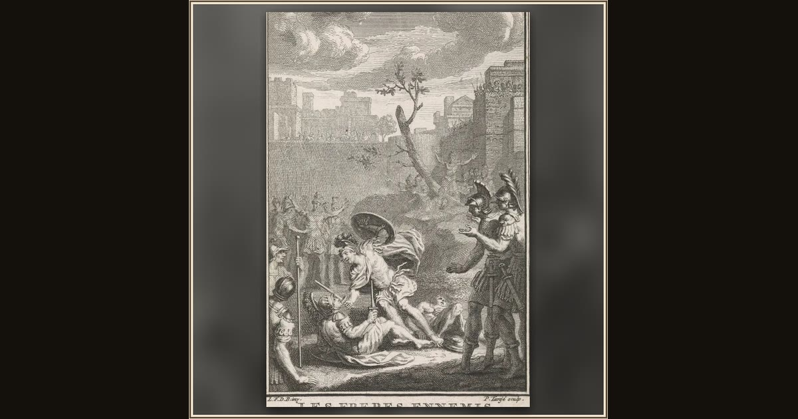

Gevecht tussen Eteocles en Polynices
Pieter Tanjé, after design by Louis Fabritius Dubourg · 1743 · rijksmuseum
One armored brother falls beneath the other near city walls, with soldiers around them. The messenger recounts Polyneices' fall after Eteocles' blow (1415). Explore its place in Euripides's Plays, Phoenissae, line 1461.